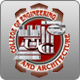
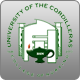

The College of Accountancy provides an educational program through which students can prepare themselves for accounting, accounting related endeavors, and increasing levels of responsibility in business and society. Graduates should acquire a broad liberal education, effective personal skills, a life-long quest for knowledge, and a global perspective that will enable them to contribute to their profession and to the world.
back to topThe College of Arts and Sciences advocates an education directed towards the development of the whole person - one that nurtures the intellectual maturity and moral integrity necessary to face the realities and challenges of a rapidly changing world.
As the academic center and intellectual heart of the University, the College of Arts and Sciences assumes the responsibility of providing a liberal education for all University of the Cordilleras students.
The basic mission of the College is to increase knowledge of students in the humanities, social sciences and natural sciences and in their understanding of the world and themselves and to sharpen their skills and instill self-discipline so that they may lead a richer, more rewarding life and become productive members of the Philippine society and the world at large.
The College of Arts and Sciences advocates an education directed towards the development of the whole person - one that nurtures the intellectual maturity and moral integrity necessary to face the realities and challenges of a rapidly changing world.
As the academic center and intellectual heart of the University, the College of Arts and Sciences assumes the responsibility of providing a liberal education for all University of the Cordilleras students.
The basic mission of the College is to increase knowledge of students in the humanities, social sciences and natural sciences and in their understanding of the world and themselves and to sharpen their skills and instill self-discipline so that they may lead a richer, more rewarding life and become productive members of the Philippine society and the world at large.
The College of Criminal Justice Education, adhering to the UC Philiosophy, recognizes the vital role in enhancing relevant and responsive education in the field of Criminology.
In 2008, the College of Criminal Justice Education became a center of excellence providing quality instruction and effective training that will develop a progressive education for those who are deserving and to keep abreast with the changing times and apply latest technology and modern techniques in Law Enforcement, Criminal Justice System, Public Safety Administration, Corrections and Jail Management.
The college aims to contribute a valuable share in the country's physical development, in the modernization of its infrastructures, and in improving the material comforts of man. Its contribution to nation building assumes visible form and directly affects regional landscapes. The Engineering & Architecture disciplines cover such an expansive area that comprehensive training in these professions encompasses liberal education as well.
The tourism and hospitality industry is one of the world's largest industries and offers unrivalled opportunities for an exciting and rewarding career. The Hotel, Restaurant Management and Tourism programs respond to this challenge with a comprehensive blend of practical and theoretical courses driven by the industry.
UC College of HRM and Tourism offers opportunities for aspiring professionals in the Hospitality and Tourism Industry. UC is committed in providing globally competitive graduates that continually address the fast changing needs of the industry.
The program's performance-based training is increasingly recognized as vital in promoting the standards of excellence required in today's business world. Graduates of Hotel, Restaurant Managementand Tourism will have a broad base of management and technical skills which enables them to immediately be productive in the workplace.
In 1986, the University of the Cordilleras, then known as the Baguio Colleges Foundation, became the first institution in Baguio City to offer a four-year course in Computer Science. Under the umbrella of the Arts and Sciences, this new division started with barely 100 students, 4 faculty members, and one course offering: Bachelor of Science in Information and Computer Science.
With its transition from a division to a separate college in June 1995, the College grew to more than 1,200 students and 34 faculty members.
In keeping with the philosophy of the University of the Cordilleras, the College of Information Technology and Computer Science has recognized its responsibility to respond to the changing needs of society, particularly in the field of Information Technology.
The College is aware that today's technology revolves around the indispensability of the computer in the fields of computations, database systems, web & graphics, networking & security, mobile technology and digital arts.
The present courses offered by the College are geared towards bolstering computing competencies, a vital role it plays in the community.
In 2007, CHED Conferred the highest academic status to the college as "Center of Excellence". UC holds the distinction of being among the nation's top nine(9) in IT education.
To fulfill these, the College shall strive to:
| Upgrade periodically the Institution's course offerings focusing on innovative tools, current trends, and industry requirements; |
| Prepare the student to apply his/her acquired academic skills to his/her related profession with commitment and dedication; |
| Become the Institution's number one provider of Information Technology tools to promote people productivity at lower costs. |
Ihe College of Teacher Education firmly believes that teachers constitute the most important resource in the nation's teaching-learning force. As such, they should be imbued with the ideals, aspirations and traditions of Philippine life and culture and should be equipped not only with the necessary pedagogical skills but also with adequate and updated knowledge in their field in line with the institution's goal of providing relevant education.
The College of Teacher Education of the University of the Cordilleras aims to develop teachers who will be effective agents in the realization of the national educational goals and most importantly those who will be able to transform people into well-rounded individuals capable of eliciting positive change in the society.
Specifically, it aims to develop teachers who:
| recognize the role education plays as an effective agent of change; thereby, actively contribute to the realization of national goals; |
| believe in and live the values such as work, thrift, self-discipline, self-reliance, honesty, respect for the right of others, self-respect, cooperation and integrity; |
| have a working knowledge of and interest in the principles, science and skill in application of these for the improvement of life; |
| show interest and faith in the teaching profession as a mission for service; |
| possess the knowledge and basic skills necessary to conduct research work; and apply research finding to help target beneficiaries and initiate improvement; |
| make teaching and learning relevant by drawing subject matter from the nature, needs and problems of the environment. |
June 1, 2003 marked the opening of the College of Nursing offering the four-year Bachelor of Science in Nursing Program, the first paramedical degree program of the university since the adoption of the trimester scheme. There were 875 enrollees comprised of degree holders, transferees and fresh high school graduates. The first Dean of the college was Ms. Norenia T. Dao-ayen and the Instructors were Ms. Shirley G. Delos Santos, Ms. Judith Odanee G. Magwilang, Dr. Mario G. Imson and Dr. Ma. Geraldine A. La Madrid.
In the next five years, UC Pre-school and Grade School envisions itself to be one of the best accredited elementary schools in Baguio City producing, Filipino learners who are Creative, Critical, God-Fearing and Sensitive to the needs of others and the environment.
© Kyan and University of Cordillera